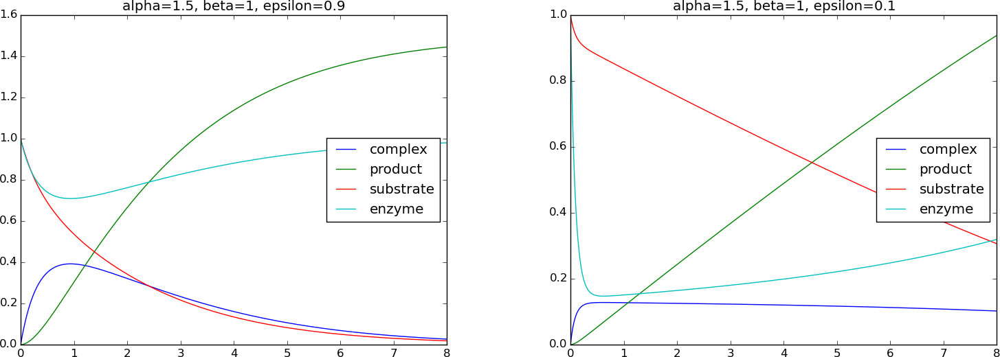

Ordinary differential equation models
This chapter introduces the basic techniques of scaling and the ways to reason about scales. The first class of examples targets exponential decay models, starting with the simple ordinary differential equation (ODE) for exponential decay processes: \( u^{\prime}=-au \), with constant \( a>0 \). Then we progress to various generalizations of this ODE, including nonlinear versions and systems of ODEs. The next class of examples concerns second-order ODEs for oscillatory systems, where the simplest ODE reads \( mu^{\prime\prime} + ku=0 \), with \( m \) and \( k \) as positive constants. Various extensions with damping and force terms are discussed in detail.
Exponential decay problems
Fundamental ideas of scaling
Scaling is an extremely useful technique in mathematical modeling and numerical simulation. The purpose of the technique is three-fold:
- Make independent and dependent variables dimensionless.
- Make the size of independent and dependent variables about unity.
- Reduce the number of independent physical parameters in the model.
If \( q_c \) is the maximum value of \( |q-q_0| \), we see that \( 0 < |\bar q|\leq 1 \). How to find \( q_c \) is sometimes the big challenge of scaling. Examples will illustrate various approaches to meet this challenge.
The many coming examples on scaling differential equations contain the following pedagogical ingredients to meet the desired learning outcomes.
- Teach the technical steps of making a mathematical model, based on differential equations, dimensionless.
- Describe various techniques for reasoning about the scales, i.e., finding the characteristic sizes of quantities.
- Teach how to identify and interpret dimensionless numbers arising from the scaling process.
- Provide a lot of different examples on making models dimensionless with physically correct scales.
- Show how symbolic software (SymPy) can be used to derive exact solutions of differential equations.
- Explain how to run a dimensionless model with software developed for the problem with dimensions.
The basic model problem
Processes undergoing exponential reduction can be modeled by the ODE problem $$ \begin{equation} u'(t) = -au(t),\quad u(0)=I, \tag{2.1} \end{equation} $$ where \( a,I>0 \) are prescribed parameters, and \( u(t) \) is the unknown function. For the particular model with a constant \( a \), we can easily derive the exact solution, \( u(t)=Ie^{-at} \), which is helpful to have in mind during the scaling process.
Example: Population dynamics
The evolution of a population of humans, animals, cells, etc., under unlimited access to resources, can be modeled by (2.1). Then \( u \) is the number of individuals in the population, strictly speaking an integer, but well modeled by a real number in large populations. The parameter \( a \) is the increase in the number of individuals per time and per individual.
Example: Decay of pressure with altitude
The simple model (2.1) also governs the pressure in the atmosphere (under many assumptions, such air is an ideal gas in equilibrium). In this case \( u \) is the pressure, measured in \( \hbox{Nm}^{-2} \); \( t \) is the height in meters; and \( a=M/(R^*T) \), where \( M \) is the molar mass of the Earth's air (0.029 kg/mol), \( R^* \) is the universal gas constant (\( 8.314\,\frac{\hbox{Nm}}{\hbox{mol K}} \)), and \( T \) is the temperature in Kelvin (K). The temperature depends on the height so we have \( a=a(t) \).
The technical steps of the scaling procedure
Step 1: Identify independent and dependent variables
There is one independent variable, \( t \), and one dependent variable, \( u \).
Step 2: Make independent and dependent variables dimensionless
We introduce a new dimensionless \( t \), called \( \bar t \), defined by $$ \begin{equation} \bar t = \frac{t}{t_c}, \tag{2.2} \end{equation} $$ where \( t_c \) is a characteristic value of \( t \). Similarly, we introduce a dimensionless \( u \), named \( \bar u \), according to $$ \begin{equation} \bar u = \frac{u}{u_c}, \tag{2.3} \end{equation} $$ where \( u_c \) is a constant characteristic size of \( u \). When \( u \) has a specific interpretation, say when (2.1) models pressure in an atmospheric layer, \( u_c \) would be referred to as characteristic pressure. For a decaying population, \( u_c \) may be a characteristic number of members in the population, e.g., the initial population \( I \).
Step 3: Derive the model involving only dimensionless variables
The next task is to insert the new dimensionless variables in the governing mathematical model. That is, we replace \( t \) by \( t_c\bar t \) and \( u \) by \( u_c\bar u \) in (2.1). The derivative with respect to \( \bar t \) is derived through the chain rule as $$ \frac{du}{dt} = \frac{d (u_c\bar u)}{d\bar t}\frac{d\bar t}{dt} = u_c\frac{d\bar u}{d\bar t}\frac{1}{t_c} = \frac{u_c}{t_c}\frac{d\bar u}{d\bar t}\tp $$ The model (2.1) now becomes $$ \begin{equation} \frac{u_c}{t_c}\frac{d\bar u}{d\bar t} = -au_c\bar u,\quad u_c\bar u(0)=I\tp \tag{2.4} \end{equation} $$
Step 4: Make each term dimensionless
Equation (2.4) still has terms with dimensions. To make each term dimensionless, we usually divide by the coefficient in front of the term with the highest time derivative (but dividing by any coefficient in any term will do). The result is $$ \begin{equation} \frac{d\bar u}{d\bar t} = -at_c\bar u,\quad \bar u(0)=u_c^{-1}I \tp \tag{2.5} \end{equation} $$
Step 5: Estimate the scales
A characteristic quantity like \( t_c \) reflects the time scale in the problem. Estimating such a time scale is certainly the most challenging part of the scaling procedure. There are different ways to reason. The first approach is to aim at a size of \( \bar u \) and its derivatives that is of order unity. If \( u_c \) is chosen such that \( |\bar u| \) is of size unity, we see from (2.5) that \( d\bar u/d\bar t \) is of the size of \( \bar u \) (i.e., unity) if we choose \( t_c = 1/a \).
Alternatively, we may look at a special case of the model where we have analytical insight that can guide the choice of scales. In the present problem we are lucky to know the exact solution for any value of the input data as long as \( a \) is a constant. For exponential decay, \( u(t)\sim e^{-at} \), it is common to define a characteristic time scale \( t_c \) as the time it takes to reduce the initial value of \( u \) by a factor of \( 1/e \) (also called the e-folding time): $$ e^{-at_c} = \frac{1}{e}e^{-a\cdot 0}\quad\Rightarrow\quad e^{-at_c}=e^{-1}, $$ from which it follows that \( t_c = 1/a \). Note that using an exact solution of the problem to determine scales is not a requirement, just a useful help in the few cases where we actually have access to an exact solution.
In this example, two different, yet common ways of reasoning, lead to the same value of \( t_c \). However, instead of using the e-folding time we could use the half-time of the exponential decay as characteristic time, which is also a very common measure of the time scale in such processes. The half time is defined as the time it takes to halve \( u \): $$ e^{-at_c} = \frac{1}{2}e^{-a\cdot 0} \quad\Rightarrow\quad t_c = a^{-1}\ln 2\tp$$ There is a factor \( \ln 2 =0.69 \) difference from the other \( t_c \) value. As long as the factor is not an order of magnitude or more different, we do not pay attention factors like \( \ln 2 \) and skip them, simply to make formulas look nicer. Using \( t_c = a^{-1}\ln 2 \) as time scale leads to a scaled differential equation \( u'=-(\ln 2) u \), which is fine, but an unusual form. People tend to prefer the simpler ODE \( u'=-u \), which arises from \( t_c=1/a \), and we shall therefore use this time scale.
Regarding \( u_c \), we may look at the initial condition and realize that the choice \( u_c=I \) makes \( \bar u(0)=1 \). For \( t>0 \), the differential equation expresses explicitly that \( u \) decreases, so \( u_c=I \) gives \( \bar u\in (0, 1] \). Scaling a variable \( q \) such that \( |\bar q|\in [0,1] \) is always the ultimate goal, and this goal is in fact obtained here! Next best result is to ensure that the magnitude of \( |q| \) is not "big" or "small", in the sense that the size is neither as large as 10 or 100, nor as small as 0.1 or 0.01. (In the present problem, where we are lucky to have an exact solution \( u(t)=Ie^{-at} \), we may look at this to explicitly see that \( u\in (0,I] \) such that \( u_c=I \) gives \( \bar u\in (0,1] \)).
With \( t_c=1/a \) and \( u_c=I \), we have the final dimensionless model $$ \begin{equation} \frac{d\bar u}{d\bar t} = -\bar u,\quad \bar u(0)=1 \tp \tag{2.6} \end{equation} $$ This is a remarkable result in the sense that all physical parameters (\( a \) and \( I \)) are removed from the model! Or more precisely, there are no physical input parameters to assign before using the model. In particular, numerical investigations of the original model (2.1) would need experiments with different \( a \) and \( I \) values, while numerical investigations of (2.6) can be limited to a single run! As soon as we have computed the curve \( \bar u(\bar t) \), we can find the solution \( u(t) \) of (2.1) by $$ \begin{equation} u(t) = u_c\bar u(t/t_c) = I\bar u(at) \tp \tag{2.7} \end{equation} $$ This particular transformation actually means stretching the \( \bar t \) and \( \bar u \) axes in a plot of \( \bar u(\bar t) \) by the factors \( a \) and \( I \), respectively.
It is very common to drop the bars when the scaled problem has been derived and work further with (2.6) simply written as $$ \frac{du}{dt} = -u,\quad u(0)=1 \tp $$ Nevertheless, in this booklet we have decided to stick to bars for all dimensionless quantities.
Making software for utilizing the scaled model
Software for solving (2.1) could take advantage of the fact that only one simulation of (2.6) is necessary. As soon as we have \( \bar u(\bar t) \) accessible, a simple scaling (2.7) computes the real \( u(t) \) for any given input data \( a \) and \( I \). Although the numerical computation of \( u(t) \) from (2.1) is very fast in this simple model problem, using (2.7) is very much faster. In general, a simple rescaling of a scaled solution is extremely more computationally efficient than solving a differential equation problem.
We can compute with the dimensionless model (2.6) in two ways, either make a solver for (2.6), or reuse a solver for (2.1) with \( I=1 \) and \( a=1 \). We will choose the latter approach since it has the advantage of giving us software that works both with a dimensionless model and a model with dimensions (and all the original physical parameters).
Software for the original unscaled problem
Assume that we have some module decay.py that offers the following functions:
-
solver(I, a, T, dt, theta=0.5)for returning the solution arraysuandt, over a time interval \( [0,T] \), for (2.1) solved by the so-called \( \theta \) rule. This rule includes the Forward Euler scheme (\( \theta=0 \)), the Backward Euler scheme (\( \theta=1 \)), or the Crank-Nicolson (centered midpoint) scheme (\( \theta=\half \)). -
read_command_line_argparse()for reading parameters in the problem from the command line and returning them:I,a,T,theta(\( \theta \)), and a list of \( \Delta t \) values for time steps. (We shall only make use of the first \( \Delta t \) value.)
from decay import solver, read_command_line_argparse
I, a, T, theta, dt_values = read_command_line_argparse()
u, t = solver(I, a, T, dt_values[0], theta)
from matplotlib.pyplot import plot, show
plot(t, u)
show()
The module decay.py is developed and explained in
Section 5.1.7 in the book Finite Difference Computing with Exponential Decay Models [7].
To solve the dimensionless problem, just fix \( I=1 \) and \( a=1 \), and choose \( \bar T \) and \( \Delta\bar t \):
_, _, T, theta, dt_values = read_command_line_argparse()
u, t = solver(I=1, a=1, T=T, dt=dt_values[0], theta=theta)
The first two variables returned from read_command_line_argparse
are I and a, which are ignored here. To indicate that these
variables are not to be used, we use a
"dummy name", often taken to be the underscore symbol in
Python. The user can set --I and --a on the command line, since
the decay module allows this, but we hope the code above has a form
that reminds the user that these options are not to be used.
Also note that T and dt_values[0] set on the command line are
the desired parameters for solving the scaled problem.
Software for the scaled problem
Turning now to the scaled problem, the solver function (originally designed for the unscaled problem) will be reused, but it will only be run if it is strictly necessary. That is, when the user requests a solution, our code should first check whether that solution can be provided by simply scaling a solution already computed and available in a file. If not, we will compute an appropriate scaled solution, find the requested unscaled solution for the user, and also save the new scaled solution to file for possible later use.
A very plain solution to the problem is found in the file
decay_scaled_v1.py.
The np.savetxt function saves a two-dimensional array ("table") to
a text file, and the np.loadtxt function can load the data back
into the program. A better solution to this problem is obtained
by using the joblib package as described next.
Implementation with joblib
The Python package joblib has functionality that is very convenient
for implementing the solver_scaled function. The first time a
function is called with a set of arguments, the statements in the
function are executed and the return value is saved to file. If the
function is called again with the same set of arguments, the
statements in the function are not executed, but the return value is
read from file (of course, many files may be stored, one for each
combination of parameter values). In computer science, one would say
that joblib in this way provides memorization functionality for
Python functions. This functionality is particularly aimed at
large-scale computations with arrays that one would hesitate to
recompute. We illustrate the technique here in a very simple
mathematical context.
First we make a solver_scaled function for the scaled
model that just calls up a solver_unscaled (with \( I=a=1 \)) for the problem with
dimensions:
from decay import solver as solver_unscaled
import numpy as np
import matplotlib.pyplot as plt
def solver_scaled(T, dt, theta):
"""
Solve u'=-u, u(0)=1 for (0,T] with step dt and theta method.
"""
print 'Computing the numerical solution'
return solver_unscaled(I=1, a=1, T=T, dt=dt, theta=theta)
Then we create some "computer memory on disk", i.e., some disk space to
store the result of a call to the solver_scaled function. Thereafter,
we redefine the name solver_scaled to a new function, created
by joblib, which calls our original solver_scaled function
if necessary and otherwise loads data from file:
import joblib
disk_memory = joblib.Memory(cachedir='temp')
solver_scaled = disk_memory.cache(solver_scaled)
The solutions are actually stored in files in the cache directory temp.
A typical use case is to read values from the command line, solve the scaled problem (if necessary), unscale the solution, and visualize the solution with dimension:
def unscale(u_scaled, t_scaled, I, a):
return I*u_scaled, a*t_scaled
from decay import read_command_line_argparse
def main():
# Read unscaled parameters, solve and plot
I, a, T, theta, dt_values = read_command_line_argparse()
dt = dt_values[0] # use only the first dt value
T_bar = a*T
dt_bar = a*dt
u_scaled, t_scaled = solver_scaled(T_bar, dt_bar, theta)
u, t = unscale(u_scaled, t_scaled, I, a)
plt.figure()
plt.plot(t_scaled, u_scaled)
plt.xlabel('scaled time'); plt.ylabel('scaled velocity')
plt.title('Universial solution of scaled problem')
plt.savefig('tmp1.png'); plt.savefig('tmp1.pdf')
plt.figure()
plt.plot(t, u)
plt.xlabel('t'); plt.ylabel('u')
plt.title('I=%g, a=%g, theta=%g' % (I, a, theta))
plt.savefig('tmp2.png'); plt.savefig('tmp2.pdf')
plt.show()
The complete code resides in the file
decay_scaled.py.
Note from the code above that read_command_line_argparse is supposed
to read parameters with dimensions (but technically, we solve the
scaled problem, if strictly necessary, and unscale the solution).
Let us run
Terminal> python decay_scaled.py --I 8 --a 0.1 --dt 0.01 --T 50
A plot of the scaled and unscaled solution appears in Figure 2.
Figure 2: Scaled (left) and unscaled (right) exponential decay.

Note that we write a message Computing the numerical solution inside
the solver_scaled function. We can then easily detect when
the solution is actually computed from scratch
and when it is simply read from file (followed by the unscaling procedure).
Here is a demo:
Terminal> # Very first run
Terminal> python decay_scaled.py --T 7 --a 1 --I 0.5 --dt 0.2
[Memory] Calling __main__--home-hpl...
solver_scaled-alias(7.0, 0.2, 0.5)
Computing the numerical solution
Terminal> # No change of T, dt, theta - can reuse solution in file
Terminal> python decay_scaled.py --T 7 --a 4 --I 2.5 --dt 0.2
Terminal> # Change of dt, must recompute
Terminal> python decay_scaled.py --T 7 --a 4 --I 2.0 --dt 0.5
[Memory] Calling __main__--home-hpl...
solver_scaled-alias(7.0, 0.5, 0.5)
Computing the numerical solution
Terminal> # Change of dt again, but dt=0.2 is already in a file
Terminal> python decay_scaled.py --T 7 --a 0.5 --I 1 --dt 0.2
We realize that joblib has access to all previous runs and does not
recompute unless it is strictly required. Our previous implementation
without joblib (in decay_scaled_v1.py)
used only one file (for one numerical case)
and will therefore perform many more calls to
solver_unscaled.
On the implementation of a simple memoize function
A memoized function recalls previous results when the same set of arguments is encountered. That is, the function caches its results. A simple implementation stores the arguments in a function call and the returned results in a dictionary, and if the arguments are seen again, one looks up in the dictionary and returns previously computed results:
class Memoize:
def __init__(self, f):
self.f = f
self.memo = {} # map arguments to results
def __call__(self, *args):
if not args in self.memo:
self.memo[args] = self.f(*args)
return self.memo[args]
# Wrap my_compute_function(arg1, arg2, ...)
my_compute_function = Memoize(my_compute_function)
The memoize functionality in joblib.Memory is more sophisticated and
can work very efficiently with large array data structures as arguments.
Note that the simple version above can only be used when all arguments to
the function f are immutable (since the key in a dictionary has to be
immutable).
Scaling a generalized problem
Now we consider an extension of the exponential decay ODE to the form $$ \begin{equation} u'(t) = -au(t) + b,\quad u(0)=I \tag{2.8} \tp \end{equation} $$ One particular model, with constant \( a \) and \( b \), is a spherical small-sized organism falling in air, $$ \begin{equation} u' = - \frac{3\pi d\mu}{\varrho_b V} u + g\left(\frac{\varrho}{\varrho_b} -1\right), \tag{2.9} \end{equation} $$ where \( d \), \( \mu \), \( \varrho_b \), \( \varrho \), \( V \), and \( g \) are physical parameters. The function \( u(t) \) represents the vertical velocity, being positive upwards. We shall use this model in the following.
Exact solution
It can be handy to have the exact solution for reference, in case of constant \( a \) and \( b \): $$ \uex(t) = \frac{e^{-at}}{a}\left( b(e^{at}-1) + aI\right) \tp $$
Solving differential equations in SymPy
It can be very useful to use a symbolic computation tool such as SymPy to aid us in solving differential equations. Let us therefore demonstrate how SymPy can be used to find this solution. First we define the parameters in the problem as symbols and \( u(t) \) as a function:
>>> from sympy import *
>>> t, a, b, I = symbols('t a b I', real=True, positive=True)
>>> u = symbols('u', cls=Function)
The next task is to define the differential equation, either as
a symbolic expression that is to equal zero, or as
an equation Eq(lhs, rhs) with lhs and rhs as expressions for
the left- and right-hand side):
>>> # Define differential equation
>>> eq = diff(u(t), t) + a*u(t) - b
>>> # or
>>> eq = Eq(diff(u(t), t), -a*u(t) + b)
The differential equation can be solved by the dsolve function, yielding
an equation of the form u(t) == expression. We want to grab the
expression on the right-hand side as our solution:
>>> sol = dsolve(eq, u(t))
>>> print sol
u(t) == (b + exp(a*(C1 - t)))/a
>>> u = sol.rhs # grab solution
>>> print u
(b + exp(a*(C1 - t)))/a
The solution contains the unknown integration constant C1, which must
be determined by the initial condition. We form the equation arising
from the initial condition \( u(0)=I \):
>>> C1 = symbols('C1')
>>> eq = Eq(u.subs(t, 0), I) # substitute t by 0 in u
>>> sol = solve(eq, C1)
>>> print sol
[log(I*a - b)/a]
The one solution that was found (stored in a list!)
must then be substituted back in the
expression u to yield the final solution:
>>> u = u.subs(C1, sol[0])
>>> print u
(b + exp(a*(-t + log(I*a - b)/a)))/a
As in mathematics with pen and paper, we strive to simplify expressions also in symbolic computing software. This frequently requires some trial and error process with SymPy's simplification functions. A very standard first try is to expand everything and run simplification algorithms:
>>> u = simplify(expand(u))
>>> print u
(I*a + b*exp(a*t) - b)*exp(-a*t)/a
Doing latex(u) automatically converts the expression to LaTeX syntax
for inclusion in reports.
The reader may wonder why we bother with scaling of differential equations if SymPy can solved the problem in a nice, closed formula. This is true in the present introductory problem, but in a more general problem setting, we have some differential equation where SymPy perhaps can help with finding an exact solution only in a special case. We can use this special-case solution to control our reasoning about scales in the more general setting.
Theory
The challenges in our scaling is to find the right \( u_c \) and \( t_c \) scales. From (2.8) we see that if \( u'\rightarrow 0 \) as \( t\rightarrow\infty \), \( u \) approaches the constant value \( b/a \). It can be convenient to let the scaled \( \bar u\rightarrow 1 \) as we approach the \( d\bar u/d\bar t = 0 \) state. This idea points to choosing $$ \begin{equation} u_c = \frac{b}{a} = g\left(\frac{\varrho}{\varrho_b} -1\right)\left(\frac{3\pi d\mu}{\varrho_b V}\right)^{-1} \tp \tag{2.10} \end{equation} $$
On the sign of the scaled velocity
A little note on the sign of \( u_c \) is necessary here. With \( \varrho_b < \varrho \), the buoyancy force upwards wins over the gravity force downwards, and the body will move upwards. In this case, the terminal velocity \( u_c > 0 \). When \( \varrho_b > \varrho \), we get a motion downwards, and \( u_c < 0 \). The corresponding \( u \) is then also negative, but the scaled velocity \( u/u_c \), becomes positive.
Inserting \( u = u_c\bar u = b\bar u/a \) and \( t=t_c\bar t \) in (2.8) leads to $$ \frac{d\bar u}{d\bar t} = -t_c a\bar u + \frac{t_c}{u_c}b, \quad \bar u(0) = I\frac{a}{b} \tp $$ We want the scales such that \( d\bar u/d\bar t \) and \( \bar u \) are about unity. To balance the size of \( \bar u \) and \( d\bar u/d\bar t \) we must therefore choose \( t_c = 1/a \), resulting in the scaled ODE problem $$ \begin{equation} \frac{d\bar u}{d\bar t} = -\bar u + 1,\quad \bar u(0)=\beta, \tag{2.11} \end{equation} $$ where \( \beta \) is a dimensionless number, $$ \begin{equation} \beta = \frac{I}{u_c} = I\frac{a}{b}, \tag{2.12} \end{equation} $$ reflecting the ratio of the initial velocity and the terminal (\( t\rightarrow \infty \)) velocity \( b/a \). Scaled equations normally end up with one or more dimensionless parameters, such as \( \beta \) here, containing ratios of physical effects in the model. Many more examples on dimensionless parameters will appear in later sections.
The analytical solution of the scaled model (2.11) reads $$ \begin{equation} \bar\uex(t) = e^{-t}\left( e^{t}-1 + \beta\right) = 1 + (\beta -1)e^{-t}\tp \tag{2.13} \end{equation} $$
The result (2.11) with the
solution (2.13) is actually
astonishing if \( a \) and \( b \) are as in (2.9):
the six parameters \( d \), \( \mu \), \( \varrho_b \), \( \varrho \), \( V \), and \( g \)
are conjured to one:
$$ \beta = I\frac{3\pi d\mu}{\varrho_b V}
\frac{1}{g}\left(\frac{\varrho}{\varrho_b} -1\right)^{-1},
$$
which is an enormous simplification of the problem if our aim is to
investigate how \( u \) varies with the physical input parameters in
the model.
In particular, if the motion starts from rest, \( \beta=0 \), and
there are no physical parameters in the scaled model!
We can then perform a single simulation and recover all physical
cases by the unscaling procedure. More precisely,
having computed \( \bar u(\bar t) \) from (2.11),
we can use
$$
\begin{equation}
u(t) = \frac{b}{a}\bar u(at),
\tag{2.14}
\end{equation}
$$
to scale back to the original
problem again.
We observe that (2.11) can utilize a solver
for (2.8) by setting \( a=1 \), \( b=1 \), and \( I=\beta \).
Given some implementation of a solver for (2.8),
say solver(I, a, b, T, dt, theta),
the scaled model is run by solver(beta, 1, 1, T, dt, theta).
Software
We may develop a solver for the scaled problem that uses joblib
to cache solutions with the same \( \beta \), \( \Delta t \), and \( T \).
For now we fix \( \theta=0.5 \).
The module decay_vc.py
(see the
section Implementation of the generalized model problem
[7] for details)
has a function
solver(I, a, b, T, dt, theta) for solving \( u'(t)=-a(t)u(t)+b(t) \) for
\( t\in (0,T] \), \( u(0)=I \), with time step dt.
We reuse this function and call it with \( a=b=1 \) and \( I=\beta \) to solve
the scaled problem:
from decay_vc import solver as solver_unscaled
def solver_scaled(beta, T, dt, theta=0.5):
"""
Solve u'=-u+1, u(0)=beta for (0,T]
with step dt and theta method.
"""
print 'Computing the numerical solution'
return solver_unscaled(
I=beta, a=lambda t: 1, b=lambda t: 1,
T=T, dt=dt, theta=theta)
import joblib
disk_memory = joblib.Memory(cachedir='temp')
solver_scaled = disk_memory.cache(solver_scaled)
If we want to plot the physical solution, we need an unscale function,
def unscale(u_scaled, t_scaled, d, mu, rho, rho_b, V):
a, b = ab(d, mu, rho, rho_b, V)
return (b/a)*u_scaled, a*t_scaled
def ab(d, mu, rho, rho_b, V):
g = 9.81
a = 3*pi*d*mu/(rho_b*V)
b = g*(rho/rho_b - 1)
return a, b
Looking at droplets of water in air, we can fix some of the parameters
and let the size parameter \( d \) be the one for experimentation.
The following function sets physical parameters, computes \( \beta \),
runs the solver for the scaled problem (joblib detects
if it is necessary), and finally plots the scaled curve
\( \bar u(\bar t) \) and the unscaled curve \( u(t) \).
def main(dt=0.075, # Time step, scaled problem
T=7.5, # Final time, scaled problem
d=0.001, # Diameter (unscaled problem)
I=0, # Initial velocity (unscaled problem)
):
# Set parameters, solve and plot
rho = 0.00129E+3 # air
rho_b = 1E+3 # density of water
mu = 0.001 # viscosity of water
# Asumme we have list or similar for d
if not isinstance(d, (list,tuple,np.ndarray)):
d = [d]
legends1 = []
legends2 = []
plt.figure(1)
plt.figure(2)
betas = [] # beta values already computed (for plot)
for d_ in d:
V = 4*pi/3*(d_/2.)**3 # volume
a, b = ab(d_, mu, rho, rho_b, V)
beta = I*a/b
# Restrict to 3 digits in beta
beta = abs(round(beta, 3))
print 'beta=%.3f' % beta
u_scaled, t_scaled = solver_scaled(beta, T, dt)
# Avoid plotting curves with the same beta value
if not beta in betas:
plt.figure(1)
plt.plot(t_scaled, u_scaled)
plt.hold('on')
legends1.append('beta=%g' % beta)
betas.append(beta)
plt.figure(2)
u, t = unscale(u_scaled, t_scaled, d_, mu, rho, rho_b, V)
plt.plot(t, u)
plt.hold('on')
legends2.append('d=%g [mm]' % (d_*1000))
plt.figure(1)
plt.xlabel('scaled time'); plt.ylabel('scaled velocity')
plt.legend(legends1, loc='lower right')
The most complicated part of the code is related to plotting, but this part can be skipped when trying to understand how we work with a scaled model to perform the computations. The complete program is found in the file falling_body.py.
Since \( I=0 \) implies \( \beta=0 \), we can run different \( d \) values without any need to recompute \( \bar u(\bar t) \) as long as we assume the particle starts from rest.
From the scaling, we see that \( u_c = b/a\sim d^{-2} \) and also that \( t_c=1/a \sim d^{-2} \), so plotting of \( u(t) \) with dimensions for various \( d \) values will involve significant variations in the time and velocity scales. Figure 3 has an example with \( d=1,2,3 \) mm, where we clearly see the different time and velocity scales in the figure with unscaled variables. Note that the scaled velocity is positive because of the sign of \( u_c \) (see the box above).
Figure 3: Velocity of falling body: scaled (left) and with dimensions (right).

Variable coefficients
When a prescribed coefficient like \( a(t) \) in \( u'(t) = -a(t)u(t) \) varies with time one usually also performs a scaling of this \( a \), $$ \bar a(\bar t) = \frac{a(t) - a_0}{a_c}, $$ where the goal is to have the scaled \( \bar a \) of size unity: \( |\bar a|\leq 1 \). This property is obtained by choosing \( a_c \) as the maximum value of \( |a(t)-a_0| \) for \( t\in [0,T] \), which is usually a quantity that can be estimated since \( a(t) \) is known as a function of \( t \). The \( a_0 \) parameter can be chosen as 0 here. (It could be tempting to choose \( a_0=\min_t a(t) \) so that \( 0\leq \bar a\leq 1 \), but then there is at least one point where \( \bar a = 0 \) and the differential equation collapses to \( u'=0 \).)
As an example, imagine a decaying cell culture where we at time \( t_1 \) change the environment (typically the nutrition) such that the death rate increases by a factor 5. Mathematically, \( a(t) = d \) for \( t < t_1 \) and \( a(t)=5d \) for \( t\geq t_1 \). The model reads \( u'=-a(t)u \), \( u(0)=I \).
The \( a(t) \) function is scaled by letting the characteristic size be \( a_c=d \) and \( a_0=0 \): $$ \bar a (\bar t) = \left\lbrace\begin{array}{ll} 1, & \bar t < t_1/t_c\\ 5, & \bar t \geq t_1/t_c \end{array}\right. $$
The scaled equation becomes $$ \frac{u_c}{t_c}\frac{d\bar u}{d\bar t} = a_c\bar a(\bar t) u_c\bar u,\quad u_c\bar u(0) = I\tp$$ The natural choice of \( u_c \) is \( I \). The characteristic time, previously taken as \( t_c=1/a \), can now be chosen as \( t_c=t_1 \) or \( t_c=1/d \). With \( t_c=1/d \) we get $$ \begin{equation} \bar u'(\bar t)=-\bar a\bar u,\quad \bar u(0)=1,\quad \bar a = \left\lbrace\begin{array}{ll} 1, & \bar t < \gamma\\ 5, & \bar t \geq \gamma \end{array}\right. \tag{2.15} \end{equation} $$ where $$ \gamma = t_1 d$$ is a dimensionless number in the problem. With \( t_c=t_1 \), we get $$ \bar u'(\bar t)=-\gamma\bar a\bar u,\quad \bar u(0)=1,\quad \bar a = \left\lbrace\begin{array}{ll} 1, & \bar t < 1\\ 5, & \bar t \geq 1 \end{array}\right.$$ The dimensionless parameter \( \gamma \) is now in the equation rather than in the definition of \( \bar a \). Both problems involve \( \gamma \), which is the ratio between the time when the environmental change happens and the typical time for the decay (\( 1/d \)).
A computation with the scaled model (2.15) and the original model with dimensions appears in Figure 4.
Figure 4: Exponential decay with jump: scaled model (left) and unscaled model (right).

Scaling a cooling problem with constant temperature in the surroundings
The heat exchange between a body at temperature \( T(t) \) and the surroundings at constant temperature \( T_s \) can be modeled by Newton's law of cooling: $$ \begin{equation} T'(t) = -k(T-T_s),\quad T(0)=T_0, \tag{2.16} \end{equation} $$ where \( k \) is a prescribed heat transfer coefficient.
Exact solution
An analytical solution is always handy to have as a control of the choice of scales. The solution of (2.16) is by standard methods for ODEs found to be \( T(t) = T_s + (T_0 - T_s)e^{-kt} \).
Scaling
Physically, we expect the temperature to start at \( T_0 \) and then to move toward the temperature of the surroundings (\( T_s \)). We therefore expect that \( T \) lies between \( T_0 \) and \( T_s \). This is mathematically demonstrated by the analytical solution as well. A proper scaling is therefore to scale and translate \( T \) according to $$ \begin{equation} \bar T = \frac{T-T_0}{T_s-T_0} \tag{2.17} \tp \end{equation} $$ Now, \( 0\leq \bar T\leq 1 \).
Scaling time by \( \bar t = t/t_c \) and inserting \( T= T_0 + (T_s-T_0)\bar T \) and \( t=t_c\bar t \) in the problem (2.16) gives $$ \frac{d\bar T}{d\bar t} = - t_ck(\bar T - 1),\quad \bar T(0) = 0 \tp $$ A natural choice, as argued in other exponential decay problems, is to choose \( t_ck=1 \), which leaves us with the scaled problem $$ \begin{equation} \frac{d\bar T}{d\bar t} = - (\bar T - 1),\quad \bar T(0)=0 \tag{2.18} \tp \end{equation} $$ No physical parameter enters this problem! Our scaling implies that \( \bar T \) starts at 0 and approaches 1 as \( \bar t\rightarrow\infty \), also in the case \( T_s < T_0 \). The physical temperature is always recovered as $$ \begin{equation} T(t) = T_0 + (T_s-T_0)\bar T (k\bar t) \tag{2.19} \tp \end{equation} $$
Software
An implementation for (2.16) works for (2.18) by setting \( k=1 \), \( T_s=1 \), and \( T_0=0 \).
Alternative scaling
An alternative temperature scaling is to choose $$ \begin{equation} \bar T = \frac{T-T_s}{T_0-T_s} \tag{2.20} \tp \end{equation} $$ Now \( \bar T=1 \) initially and approaches zero as \( t\rightarrow\infty \). The resulting scaled ODE problem then becomes $$ \begin{equation} \frac{d\bar T}{d\bar t} = - \bar T,\quad \bar T(0)=1, \tag{2.21} \tp \end{equation} $$ with solution \( \bar T = e^{-\bar t} \).
Scaling a cooling problem with time-dependent surroundings
Let us apply the model (2.16) to the case when the surrounding temperature varies in time. Say we have an oscillating temperature environment according to $$ \begin{equation} T_s(t) = T_m + a\sin(\omega t), \tag{2.22} \end{equation} $$ where \( T_m \) is the mean temperature in the surroundings, \( a \) is the amplitude of the variations around \( T_m \), and \( 2\pi/\omega \) is the period of the temperature oscillations.
Exact solution
Also in this relatively simple problem
it is possible to solve the differential equation problem analytically.
Such a solution may be a good help to see what the scales are, and
especially to control other forms for reasoning about the scales.
Using the method of integrating factors for the
original differential equation, we have
$$ T(t) = T_0e^{-kt} + e^{-kt}k\int_0^t e^{k\tau}T_s(\tau)d\tau\tp$$
With \( T_s(t)=T_m + a\sin (\omega t) \) we can use SymPy to help us with
integrations (note that we use w for \( \omega \) in the computer code):
>>> from sympy import *
>>> t, k, T_m, a, w = symbols('t k T_m a w', real=True, positive=True)
>>> T_s = T_m + a*sin(w*t)
>>> I = exp(k*t)*T_s
>>> I = integrate(I, (t, 0, t))
>>> Q = k*exp(-k*t)*I
>>> Q = simplify(expand(Q))
>>> print Q
(-T_m*k**2 - T_m*w**2 + a*k*w +
(T_m*k**2 + T_m*w**2 + a*k**2*sin(t*w) -
a*k*w*cos(t*w))*exp(k*t))*exp(-k*t)/((k**2 + w**2))
Reordering the result, we get $$ T(t) = T_0e^{-kt} + T_m(1- e^{-kt}) + (k^2 + \omega^2)^{-1}(ak\omega e^{-kt} + ak\sin (\omega t) - akw\cos(\omega t))\tp$$
Scaling
The scaling (2.17) brings in a time-dependent characteristic temperature scale \( T_s-T_0 \). Let us start with a fixed scale, where we take the characteristic temperature variation to be \( T_m - T_0 \): $$ \bar T = \frac{T-T_0}{T_m-T_0}\tp$$ We realize by physical reasoning that \( T \) sets out at \( T_0 \), but with time, it will oscillate around \( T_m \). (This reasoning can be controlled by looking at the exact solution we produced above.) The typical average temperature span is therefore \( |T_m-T_0| \), unless \( a \) is much larger than \( |T_m-T_0| \) or \( T_0 \) is very close to \( T_m \) (see Exercise 2.3: Perform alternative scalings for a discussion of these cases).
We get from the differential equation, with \( t_c=1/k \) as in the former case, $$ k(T_m-T_0)\frac{d\bar T}{d\bar t} = -k((T_m-T_0)\bar T + T_0 - T_m - a \sin(\omega t),$$ resulting in $$ \begin{equation} \frac{d\bar T}{d\bar t} = -\bar T + 1 + \alpha\sin (\beta \bar t),\quad \bar T(0)=0, \tag{2.23} \end{equation} $$ where we have two dimensionless numbers: $$ \alpha = \frac{a}{T_m-T_0},\quad \beta = \frac{\omega}{k}\tp$$ The \( \alpha \) quantity measures the ratio of temperatures: amplitude of oscillations versus distance from initial temperature to the average temperature for large times. The \( \beta \) number is the ratio of the two time scales: the frequency of the oscillations in \( T_s \) and the inverse e-folding time of the heat transfer. For clear interpretation of \( \beta \) we may introduce the period \( P=2\pi/\omega \) of the oscillations in \( T_s \) and the e-folding time \( e=1/k \). Then \( \beta = 2\pi e/P \) and measures the e-folding time versus the period.
Remark
The original problem features five physical parameters: \( k \), \( T_0 \), \( T_m \), \( a \), and \( \omega \), but only two dimensionless numbers appear in the scaled model (2.23). In fact, this is an example where application of the Pi theorem (see the section The Buckingham Pi theorem) falls short. Since, only time and temperature are involved as unit types, the theorem predicts that the five parameters yields three dimensionless numbers, not two. Scaling of the differential equations, on the other hand, shows us that the two parameters \( T_m \) and \( T_0 \) affect the nature of the problem only through their difference.
Software
Implementations of the unscaled problem (2.16) can be reused for the scaled model by setting \( k=1 \), \( T_0=0 \), and \( T_s(t) = 1 + \alpha\sin (\beta \bar t) \) (\( T_m=1 \), \( a=\alpha \), \( \omega =\beta \)). The file osc_cooling.py contains solvers for the problem with dimensions and for the scaled problem. The figure below shows three cases of \( \beta \) values: small, medium, and large.

For the small \( \beta \) value, the oscillations in the surrounding temperature are slow enough compared to \( k \) for the heating and cooling process to follow the surrounding temperature, with a small time lag. For larger \( \beta \), the heating and cooling require more time, and the oscillations get smaller.
Discussion of the time scale
There are two time variations of importance in the present problem: heat is transferred to the surroundings at a rate \( k \), and the surroundings have a temperature variation with a period that goes like \( 1/\omega \). (We can, when we are so lucky that we have an analytical solution at hand, inspect this solution to see that \( k \) impacts the problem through a decay factor \( e^{-kt} \), and \( \omega \) impacts the problem through oscillations \( \sin(\omega t) \).) The \( k \) parameter related to temperature decay points to a time scale \( t_c=1/k \), while the temperature oscillations of the surroundings point to a time scale \( t_c=1/\omega \). Which one should be chosen?
Bringing the temperature from \( T_0 \) to the level of the surroundings, \( T_m \), goes like \( e^{-kt} \), so in this process \( t_c=1/k \) is the characteristic time. Thereafter, the body's temperature just responds to the oscillations and the \( \sin (\omega t) \) (and \( \cos(\omega t) \)) term dominates. For these large times, \( t_c=1/\omega \) is the appropriate time scale. Choosing \( t_c=1/\omega \) results in $$ \begin{equation} \frac{d\bar T}{d\bar t} = -\beta^{-1}(\bar T - (1 + \alpha\sin (\bar t))),\quad \bar T(0)=0\tp \tag{2.24} \end{equation} $$
Let us illustrate another, less effective, scaling. The temperature scale in (2.17) looks natural, so we apply this choice of scale. The characteristic temperature \( T_0-T_s \) now involves a time-dependent term \( T_s(t) \). The mathematical steps become a bit more technically involved: $$ T(t) = T_0 + (T_s(t)-T_0)\bar T,$$ $$ \frac{dT}{dt} = \frac{dT_s}{dt}\bar T + (T_s-T_0)\frac{d\bar T}{d\bar t}\frac{d\bar t}{dt} \tp $$ With \( \bar t = t/t_c = kt \) we get from the differential equation $$ \frac{dT_s}{dt}\bar T + (T_s-T_0)\frac{d\bar T}{d\bar t}k = -k(\bar T - 1)(T_s - T_0), $$ which after dividing by \( k(T_s-T_0) \) results in $$ \frac{d\bar T}{d\bar t} = -(\bar T - 1) - \frac{dT_s}{dt}\frac{\bar T}{k(T_s-T_0}, $$ or $$ \frac{d\bar T}{d\bar t} = -(\bar T - 1) - \frac{a\omega\cos(\omega \bar t/k)}{k(T_m + a\sin(\omega \bar t/k) -T_0)}\bar T \tp $$ The last term is complicated and becomes more tractable if we factor out dimensionless numbers. To this end, we scale \( T_s \) by (e.g.) \( T_m \), which means to factor out \( T_m \) in the denominator. We are then left with $$ \begin{equation} \frac{d\bar T}{d\bar t} = -(\bar T - 1) - \alpha\beta \frac{\cos(\beta \bar t)}{1 + \alpha\sin(\beta\bar t) - \gamma} \bar T, \tag{2.25} \end{equation} $$ where \( \alpha \), \( \beta \), and \( \gamma \) are dimensionless numbers characterizing the relative importance of parameters in the problem: $$ \begin{equation} \alpha=a/T_m,\quad \beta = \omega/k,\quad \gamma = T_0/T_m \tp \tag{2.26} \end{equation} $$ We notice that (2.25) is not a special case of the original problem (2.16). Furthermore, the original five parameters \( k \), \( T_m \), \( a \), \( \omega \), and \( T_0 \) are reduced to three dimensionless parameters. We conclude that this scaling is inferior, because using the temperature scale \( T_0-T_m \) enables reuse of the software for the unscaled problem and only two dimensionless parameters appear in the scaled model.
Let us briefly mention another possible temperature scaling: \( \bar T = T/T_m \), motivated by the fact that as \( t\rightarrow\infty \), \( T \) will oscillate around \( T_m \), so this \( \bar T \) will oscillate around unity. We get the dimensionless ODE $$ \frac{d\bar T}{d\bar t} = -(\bar T - (1 + \delta\sin(\beta\bar t))),$$ with a new dimensionless parameter \( \delta = a/T_m \). However, the initial condition becomes \( \bar T(0)=T_0/T_m \), and the ratio \( T_0/T_m \) is a third dimensionless parameter, so this scaling is also inferior to the one above with only two parameters.
Scaling a nonlinear ODE
Exponential growth models, \( u'=au \), are not realistic in environments with limited resources. However, by letting \( a \) depend on \( u \), the effect of limited resources can well be captured by such a simple differential equation model: $$ \begin{equation} u' = a(u)u,\quad u(0)=I\tp \tag{2.27} \end{equation} $$ If the maximum value of \( u \) is denoted by \( M \), we have that \( a(M)=0 \). A simple choice fulfilling this requirement is \( a(u)=\varrho(1-u/M) \). The parameter \( \varrho \) can be interpreted as the initial exponential growth rate if we assume that \( I/M\ll 1 \), since at \( t=0 \) the model then approximates \( u'=\varrho u \).
The choice \( a(u)=\varrho(1-u/M) \) is known as the logistic model for population growth: $$ \begin{equation} u' = \varrho u(1-u/M),\quad u(0)=I\tp \tag{2.28} \end{equation} $$ A more complicated choice of \( a \) may be \( a(u)=\varrho(1-u/M)^p \) for some exponent \( p \) (this function also fulfills \( a(M)=0 \) and \( a\approx\varrho \) for \( t=0 \)).
Scaling
Let us scale (2.27) with \( a(u)=\varrho (1-u/M)^p \). The natural scale for \( u \) is \( M \) (\( u_c=M \)), since we know that \( 0 < u\leq M \), and this makes the dimensionless \( \bar u = u/M \in (0,1] \). The function \( a(u) \) is typically varying between 0 and \( \varrho \), so it can be scaled as $$ \bar a(\bar u) = \frac{a(u)}{\varrho} = (1 - \frac{u}{M})^p = (1 - \bar u)^p\tp$$ Time is scaled as \( \bar t = t/t_c \) for some suitable characteristic time \( t_c \). Inserted in (2.27), we get $$ \frac{u_c}{t_c}\frac{d\bar u}{d\bar t} = \varrho\bar a u_c\bar u,\quad u_c\bar u(0)=I,$$ resulting in $$ \frac{d\bar u}{d\bar t} = t_c \varrho (1 - \bar u)^p \bar u,\quad \bar u(0) =\frac{I}{M}\tp$$ A natural choice is \( t_c =1/\varrho \) as in other exponential growth models since it leads to the term on the right-hand side to be about unity, just as the left-hand side. (If the scaling is correct, \( \bar u \) and its derivatives are of order unity, so the coefficients must also be of order unity.) Introducing also the dimensionless parameter $$ \alpha = \frac{I}{M},$$ measuring the fraction of the initial population compared to the maximum one, we get the dimensionless model $$ \begin{equation} \frac{d\bar u}{d\bar t} = (1 - \bar u)^p \bar u,\quad \bar u(0) =\alpha\tp \tag{2.29} \end{equation} $$ Here, we have two dimensionless parameters: \( \alpha \) and \( p \). A classical logistic model with \( p=1 \) has only one dimensionless variable.
Alternative scaling
We could try another scaling of \( u \) where we also translate \( \bar u \): $$ \bar u = \frac{u-I}{M}\tp $$ This choice of \( \bar u \) results in $$ \begin{equation} \frac{d\bar u}{d\bar t} = (1 - \alpha - \bar u)^p \bar u,\quad \bar u(0) =0\tp \tag{2.30} \end{equation} $$ The essential difference between (2.29) and (2.30) is that \( \bar u\in [\alpha, 1] \) in the former and \( \bar u \in [0, 1-\alpha] \) in the latter. Both models involve the dimensionless numbers \( \alpha \) and \( p \). An advantage of (2.29) is that software for the unscaled model can easily be used for the scaled model by choosing \( I=\alpha \), \( M=1 \), and \( \varrho=1 \).
SIR ODE system for spreading of diseases
The field of epidemiology frequently applies ODE systems to describe the spreading of diseases, such as smallpox, measles, plague, ordinary flu, swine flu, and HIV. Different models include different effects, which are reflected in dimensionless numbers. Most of the effects are modeled as exponential decay or growth of the dependent variables.
The simplest model has three categories of people: susceptibles (S) who can get the disease, infectious (I) who are infected and may infect susceptibles, and recovered (R) who have recovered from the disease and gained immunity. We introduce \( S(t) \), \( I(t) \), and \( R(t) \) as the number of people in the categories S, I, and R, respectively. The model, naturally known as the SIR model, can be expressed as a system of three ODEs: $$ \begin{align} \frac{dS}{dt} &= - \beta SI, \tag{2.31}\\ \frac{dI}{dt} &= \beta SI - \nu I, \tag{2.32}\\ \frac{dR}{dt} &= \nu I, \tag{2.33} \end{align} $$ where \( \beta \) and \( \nu \) are empirical constants. The average time for recovering from the disease can be shown to be \( \nu^{-1} \), but \( \beta \) is much harder to estimate, so working with a scaled model where \( \beta \) is "scaled away" is advantageous.
Scaling
It is natural to scale \( S \), \( I \), and \( R \) by, e.g., \( S(0) \): $$ \bar S = \frac{S}{S(0)},\quad \bar I = \frac{I}{S(0)},\quad \bar R = \frac{R}{S(0)}\tp $$ Introducing \( \bar t = t/t_c \), we arrive at the equations $$ \begin{align*} \frac{d\bar S}{d\bar t} &= - t_c S(0) \beta\bar S\bar I, \\ \frac{d\bar I}{d\bar t} &= t_c S(0) \beta \bar S\bar I - t_c \nu \bar I, \\ \frac{d\bar R}{d\bar t} &= t_c \nu \bar I, \end{align*} $$ with initial conditions \( \bar S(0)=1 \), \( \bar I(0)=I_0/S(0)=\alpha \), and \( \bar R(0)=R(0)/S(0) \). Normally, \( R(0)=0 \).
Taking \( t_c=1/\nu \), corresponding to a time unit equal to the time it takes to recover from the disease, we end up with the scaled model $$ \begin{align} \frac{d\bar S}{d\bar t} &= - R_0\bar S\bar I, \tag{2.34}\\ \frac{d\bar I}{d\bar t} &= R_0 \bar S\bar I - \bar I, \tag{2.35}\\ \frac{d\bar R}{d\bar t} &= \bar I, \tag{2.36} \end{align} $$ with \( \bar S(0)=1 \), \( \bar I(0)=\alpha \), \( \bar R(0)=0 \), and \( R_0 \) as the dimensionless number $$ \begin{equation} R_0 = \frac{S(0)\beta}{\nu}\tp \tag{2.37} \end{equation} $$ We see from (2.35) that to make the disease spreading, \( d\bar I/d\bar t >0 \), and therefore \( R_0 \bar S(0) - 1 > 0 \) or \( R_0 > 1 \) since \( \bar S(0)=1 \). Therefore, \( R_0 \) reflects the disease's ability to spread and is consequently an important dimensionless quantity, known as the basic reproduction number. This number reflects the number of infected people caused by one infectious individual during the time period of the disease.
Looking at (2.32), we see that to increase \( I \) initially, we must have \( dI/dt >0 \) at \( t=0 \), which implies \( \beta I(0)S(0) - \nu I(0) >0 \), i.e., \( R_0 > 1 \).
Software
Any implementation of the SIR model with dimensions can be reused for the scaled model by setting \( \beta = R_0 \), \( \nu = 1 \), \( S(0)=1-\alpha \), and \( I(0)=\alpha \). Below is a plot with two cases: \( R_0=2 \) and \( R_0=5 \), both with \( \alpha=0.02 \).

Alternative scaling
Adding (2.31)-(2.33) shows that $$ \frac{dS}{dt}+\frac{dI}{dt}+\frac{dR}{dt}=0\quad\Rightarrow\quad S+I+R=\hbox{const}=N,$$ where \( N \) is the size of the population. We can therefore scale \( S \), \( I \), and \( R \) by the total population \( N=S(0)+I(0)+R(0) \): $$ \bar S = \frac{S}{N},\quad \bar I = \frac{I}{N},\quad \bar R = \frac{R}{N}\tp $$ With the same time scale, one gets the system (2.34)-(2.36), but with \( R_0 \) replaced by the dimensionless number: $$ \begin{equation} \tilde R_0 = \frac{N\beta}{\nu}\tp \tag{2.38} \end{equation} $$ The initial conditions become \( \bar S(0)=1-\alpha \), \( \bar I(0)=\alpha \), and \( \bar R(0)=0 \).
For the disease to spread at \( t=0 \), we must have \( \tilde R_0 \bar S(0) > 1 \), but \( \tilde R_0 \bar S(0) = N\beta/\nu \cdot S(0)/N = R_0 \), so the criterion is still \( R_0 > 1 \). Since \( R_0 \) is a more famous number than \( \tilde R_0 \), we can write the ODEs with \( R_0/S(0) = R_0/(1-\alpha) \) instead of \( \tilde R_0 \).
Choosing \( t_c \) to make the \( SI \) terms balance the time derivatives, \( t_c = (N\beta)^{-1} \), moves \( \tilde R_0 \) (or \( R_0 \) if we scale \( S \), \( I \), and \( R \) by \( S(0) \)) to the \( I \) terms: $$ \begin{align*} \frac{d\bar S}{d\bar t} &= - \bar S\bar I, \\ \frac{d\bar I}{d\bar t} &= \bar S\bar I - \tilde R_0^{-1} \bar I, \\ \frac{d\bar R}{d\bar t} &= \tilde R_0^{-1} I\tp \end{align*} $$
SIRV model with finite immunity
A common extension of the SIR model involves finite immunity: after some period of time, recovered individuals lose their immunity and become susceptibles again. This is modeled as a leakage \( -\mu R \) from the R to the S category, where \( \mu^{-1} \) is the average time it takes to lose immunity. Vaccination is another extension: a fraction \( pS \) is removed from the S category by successful vaccination and brought to a new category V (the vaccinated). The ODE model reads $$ \begin{align} \frac{dS}{dt} &= - \beta SI - pS + \mu R, \tag{2.39}\\ \frac{dI}{dt} &= \beta SI - \nu I, \tag{2.40}\\ \frac{dR}{dt} &= \nu I -\mu R, \tag{2.41}\\ \frac{dV}{dt} &= p S\tp \tag{2.42} \end{align} $$ Using \( t_c=1/\nu \) and scaling the unknowns by \( S(0) \), we arrive at the dimensionless model $$ \begin{align} \frac{d\bar S}{d\bar t} &= - R_0 \bar S \bar I - \delta \bar S + \gamma \bar R, \tag{2.43}\\ \frac{d\bar I}{d\bar t} &= R_0 \bar S \bar I - \bar I, \tag{2.44}\\ \frac{d\bar R}{d\bar t} &= \bar I -\gamma \bar R, \tag{2.45}\\ \frac{d\bar V}{d\bar t} &= \delta \bar S, \tag{2.46} \end{align} $$ with two new dimensionless parameters: $$ \gamma = \frac{\mu}{\nu},\quad \delta = \frac{p}{\nu}\tp $$ The quantity \( p^{-1} \) can be interpreted as the average time it takes to vaccinate a susceptible successfully. Writing \( \gamma = \nu^{-1}/\mu^{-1} \) and \( \delta = \nu^{-1}/p^{-1} \) gives the interpretation that \( \gamma \) is the ratio of the average time to recover and the average time to lose immunity, while \( \delta \) is the ratio of the average time to recover and the average time to successfully vaccinate a susceptible.
The plot in Figure 5 has \( \gamma = 0.05 \), i.e., loss of immunity takes 20 weeks if it takes one week to recover from the disease. The left plot corresponds to no vaccination, while the right has \( \delta = 0.5 \) for a vaccination campaign that lasts from day 7 to day 15. The value \( \delta =0.5 \) reflects that it takes two weeks to successfully vaccinate a susceptible, but the effect of vaccination is still dramatic.
Figure 5: Spreading of a disease with loss of immunity (left) and added vaccination (right).

Michaelis-Menten kinetics for biochemical reactions
A classical reaction model in biochemistry describes how a substrate S is turned into a product P with aid of an enzyme E. S and E react to form a complex ES in the first stage of the reaction. In the second stage, ES is turned into E and P. Introducing the amount of S, E, ES, and P by \( [S] \), \( [E] \), \( [ES] \), and \( [P] \), the mathematical model can be written as $$ \begin{align} \frac{d[ES]}{dt} &= k_+[E][S] - k_v[ES] - k_-[ES], \tag{2.47}\\ \frac{d[P]}{dt} &= k_v[ES], \tag{2.48}\\ \frac{d[S]}{dt} &= -k_+[E][S] + k_-[ES], \tag{2.49}\\ \frac{d[E]}{dt} &= -k_+[E][S] + k_-[ES] + k_v[ES]\tp \tag{2.50} \end{align} $$ The initial conditions are \( [ES](0)=[P](0)=0 \), and \( [S]=S_0 \), \( [E]=E_0 \). Three rate constants are involved: \( k_+ \), \( k_- \), and \( k_v \). The above mathematical model is known as Michaelis-Menten kinetics.
The amount of substance is measured in the unit mole (mol). From the equations we can see that \( k_+ \) is measured in \( \hbox{s}^{-1}\hbox{mol}^{-1} \), while \( k_- \) and \( k_v \) are measured in \( \hbox{s}^{-1} \). It is convenient to get rid of the mole unit for the amount of a substance. When working with dimensionless quantities, only ratios of the rate constants and not their specific values are needed.
Classical analysis
A common assumption is that the formation of \( [ES] \) is very fast and that it quickly reaches an equilibrium state, \( [ES]^{\prime}=0 \). Equation (2.47) then reduces to the algebraic equation $$ k_+[E][S] - k_v[ES] - k_-[ES] = 0, $$ which leads to $$ \begin{equation} \frac{[E][S]}{[ES]} = \frac{k_- + k_v}{k_+} = K, \tag{2.51} \end{equation} $$ where \( K \) is the famous Michaelis constant - the equilibrium constant between \( [E][S] \) and \( [ES] \).
Another important observation is that the ODE system implies two conservation equations, arising from simply adding the ODEs: $$ \begin{align} \frac{d[ES]}{dt} + \frac{d[E]}{dt} & =0, \tag{2.52}\\ \frac{d[ES]}{dt} + \frac{d[S]}{dt} + \frac{d[P]}{dt} &= 0, \tag{2.53} \end{align} $$ from which it follows that $$ \begin{align} [ES] + [E] &= E_0, \tag{2.54}\\ [ES] + [S] + [P] &= S_0\tp \tag{2.55} \end{align} $$
We can use (2.54) and (2.51) to express \( [E] \) by \( [S] \): $$ [E] = E_0 - [ES] = E_0 - \frac{[E][S]}{K}\quad\Rightarrow\quad [E] = \frac{KE_0}{K + [S]}\tp$$ Now (2.49) can be developed to an equation involving \( [S] \) only: $$ \begin{align} \frac{d[S]}{dt} &= -k_+[E][S] + k_-[ES]\nonumber\\ & = (-k_+ + \frac{k_-}{K})[E][S]\nonumber\\ & = (-k_+ + \frac{k_-}{K})[S]\frac{KE_0}{K + [S]}\nonumber\\ & = - \frac{k_-E_0}{[S] + K}\tp \tag{2.56} \end{align} $$ We see that the parameter \( K \) is central.
From above expression for \( [E] \) and (2.54) it now follows $$ [E]=\frac{K E_0}{K+[S]},\quad [ES]=\frac{E_0[S]}{K+[S]}. $$ If \( K \) is comparable to \( S_0 \) these indicate $$ [E]\sim E_0,\quad [ES]\sim \frac{E_0 S_0}{K}, $$ as is used for scaling \( [E] \) and \( Q_c \), subsequently. Provided we exclude the case \( [S]\gg K \), we may infer that \( [E] \) will be of magnitude \( E_0 \), while \( [ES] \) will be of magnitude \( E_0 S_0/K \).
Dimensionless ODE system
Let us reason how to make the original ODE system (2.47)-(2.50) dimensionless. Aiming at \( [S] \) and \( [E] \) of unit size, two obvious dimensionless unknowns are $$ \bar S = \frac{[S]}{S_0},\quad \bar E = \frac{[E]}{E_0}\tp$$ For the other two unknowns we just introduce scales to be determined later: $$ \bar P = \frac{[P]}{P_c},\quad \bar{Q} = \frac{[ES]}{Q_c}\tp $$ With \( \bar t = t/t_c \) the equations become $$ \begin{align*} \frac{d\bar Q}{d\bar t} &= t_ck_+\frac{E_0S_0}{Q_c}\bar E\bar S - t_c(k_v + k_-)\bar Q,\\ \frac{d\bar P}{d\bar t} &= t_ck_v\frac{Q_c}{P_c}\bar Q,\\ \frac{d\bar S}{d\bar t} &= -t_ck_+E_0\bar E\bar S + t_ck_-\frac{Q_c}{S_0}\bar Q,\\ \frac{d\bar E}{d\bar t} &= -t_ck_+S_0\bar E\bar S + t_c(k_- + k_v)\frac{Q_c}{E_0}\bar Q\tp \end{align*} $$
Determining scales
Choosing the scales is actually a quite complicated matter that requires extensive analysis of the equations to determine the characteristics of the solutions. Much literature is written about this, but here we shall take a simplistic and pragmatic approach. Besides the Michaelis constant \( K \), there is another important parameter, $$ \epsilon = \frac{E_0}{S_0},$$ because most applications will involve a small \( \epsilon \). We shall have \( K \) and \( \epsilon \) in mind while choosing scales such that these symbols appear naturally in the scaled equations.
Looking at the equations, we see that the \( K \) parameter will appear if \( t_c\sim 1/k_+ \). However, \( 1/k_+ \) does not have the dimension \( \hbox{[T]}^{-1} \) as required, so we need to add a factor with dimension mol. A natural choice is \( t_c^{-1}=k_+S_0 \) or \( t_c^{-1}=k_+E_0 \). Since often \( S_0\gg E_0 \), the former \( t_c \) is a short time scale and the latter is a long time scale. If the interest is in the long time scale, we set $$ t_c = \frac{1}{k_+E_0}\tp$$ The equations then take the form $$ \begin{align*} \frac{d\bar Q}{d\bar t} &= \frac{S_0}{Q_c}\bar E\bar S - KE_0^{-1}\bar Q,\\ \frac{d\bar P}{d\bar t} &= \frac{k_v}{k_+ E_0}\frac{Q_c}{P_c}\bar Q,\\ \frac{d\bar S}{d\bar t} &= -\bar E\bar S + \frac{k_-}{k_+E_0}\frac{Q_c}{S_0}\bar Q,\\ \frac{d\bar E}{d\bar t} &= -\epsilon^{-1}\bar E\bar S + K\frac{Q_c}{E_0^2}\bar Q\tp \end{align*} $$ The \( [ES] \) variable starts and ends at zero, and its maximum value can be roughly estimated from the equation for \( [ES]^\prime \) by setting \( [ES]^\prime = 0 \), which gives $$ [ES] = \frac{[E][S]}{K}\sim \frac{E_0S_0}{K},$$ where we have replaced \( [E][S] \) by \( E_0S_0 \) as an identification of magnitude. This magnitude of \( [ES] \) at its maximum can be used as the characteristic size \( Q_c \): $$ Q_c = \frac{E_0S_0}{K}\tp$$
The equation for \( \bar P \) simplifies if we choose \( P_c=Q_c \). With these assumptions one gets $$ \begin{align*} \frac{d\bar Q}{d\bar t} &= KE_0^{-1} (\bar E\bar S - \bar Q),\\ \frac{d\bar P}{d\bar t} &= \frac{k_v}{k_+ E_0}\bar Q,\\ \frac{d\bar S}{d\bar t} &= -\bar E\bar S + \frac{k_-}{k_+E_0}\frac{E_0}{K}\bar Q,\\ \frac{d\bar E}{d\bar t} &= -\epsilon^{-1}\bar E\bar S + \epsilon^{-1}\bar Q\tp \end{align*} $$ We can now identify the dimensionless numbers $$ \alpha = \frac{K}{E_0},\quad \beta = \frac{k_v}{k_+ E_0}, \quad \gamma = \frac{k_-}{k_+E_0}, $$ where we see that \( \alpha = \beta + \gamma \), so \( \gamma \) can be eliminated. Moreover, $$ \alpha = \frac{k_-}{k_+E_0} + \beta,$$ implying that \( \alpha > \beta \).
We arrive at the final set of scaled differential equations: $$ \begin{align} \frac{d\bar Q}{d\bar t} &= \alpha (\bar E\bar S - \bar Q), \tag{2.57}\\ \frac{d\bar P}{d\bar t} &= \beta\bar Q, \tag{2.58}\\ \frac{d\bar S}{d\bar t} &= -\bar E\bar S + (1 - \beta\alpha^{-1})\bar Q, \tag{2.59}\\ \epsilon\frac{d\bar E}{d\bar t} &= -\bar E\bar S + \bar Q\tp \tag{2.60} \end{align} $$ The initial conditions are \( \bar S=\bar E =1 \) and \( \bar Q=\bar P=0 \).
The five initial parameters (\( S_0 \), \( E_0 \), \( k_+ \), \( k_- \), and \( k_v \)) are reduced to three dimensionless constants:
- \( \alpha \) is the dimensionless Michaelis constant, reflecting the ratio of the production of P and E (\( k_v+k_- \)) versus the production of the complex (\( k_+ \)), made dimensionless by \( E_0 \),
- \( \epsilon \) is the initial fraction of enzyme relative to the substrate,
- \( \beta \) measures the relative importance of production of P (\( k_v \)) versus production of the complex (\( k_+ \)), made dimensionless by \( E_0 \).
Conservation equations
The counterpart to the conservation equations (2.54)-(2.55) is obtained by adding (2.57) and \( \alpha \) times (2.60), and adding (2.57), (2.58), and \( \alpha \) times (2.59): $$ \begin{align} \epsilon^{-1}\alpha^{-1}\bar Q + \bar E &= 1, \tag{2.61}\\ \alpha\bar S + \bar Q + \bar P &= \alpha\tp \tag{2.62} \end{align} $$
The scaled quantities, as well as the original concentrations, must be positive variables, and \( \bar E\in [0,1] \), \( \bar S\in [0,1] \). Such checks along with the conserved quantities above should be performed at every time step in a simulation.
Analysis of the scaled system
In the scaled system, we may assume \( \epsilon \) small, which from (2.60) gives rise to the simplification \( \epsilon\bar E^{\prime}=0 \), and thereby the relation \( \bar Q = \bar E\bar S \). The conservation equation \( [ES] + [E]= E_0 \) reads \( Q_c\bar Q + E_0\bar E = E_0 \) such that \( \bar E = 1 - Q_c\bar Q/E_0=1- \bar Q S_0/K = 1 - \epsilon^{-1}\alpha^{-1}\bar Q \). The relation \( \bar Q=\bar E\bar S \) then becomes $$ \bar Q = (1 - \epsilon^{-1}\alpha^{-1}\bar Q)\bar S,$$ which can be solved for \( \bar Q \): $$ \bar Q = \frac{\bar S}{1 + \epsilon^{-1}\alpha^{-1}\bar S}\tp$$ The equation (2.59) for \( \bar S \) becomes $$ \begin{equation} \frac{d\bar S}{d\bar t} = -\beta\alpha^{-1}\bar Q = -\frac{\beta\bar S}{\alpha + \epsilon^{-1}\bar S}\tp \tag{2.63} \end{equation} $$ This is a more precise analysis than the one leading to (2.56) since we now realize that the mathematical assumption for the simplification is \( \epsilon\rightarrow 0 \).
Is (2.63) consistent with (2.56)? It is easy to make algebraic mistakes when deriving scaled equations, so it is always wise to carry out consistency checks. Introducing dimensions in (2.63) leads to $$ \frac{t_c}{S_0}\frac{d S}{dt} = \frac{d\bar S}{d\bar t} = -\frac{\beta\bar S}{\alpha + \epsilon^{-1}\bar S} = -\frac{k_v}{k_+E_0}\frac{S}{KE_0^{-1} + E_0^{-1}S_0\bar S} = -\frac{k_v}{k_+}\frac{\bar S}{K + S},$$ and hence with \( t_c^{-1}=k_+E_0 \), $$ \frac{dS}{dt} = -\frac{k_vE_0 S}{K + S},$$ which is (2.56).
Figure 6 shows the impact of \( \epsilon \): with a moderately small
value (0.1) we see that \( \bar Q\approx 0 \), which justifies the
simplifications performed above. We also observe that all the unknowns
vary between 0 and about 1, indicating that the scaling is successful
for the chosen dimensionless numbers. The simulations made use of
a time step \( \Delta\bar t=0.01 \) with a 4th-order Runge-Kutta method,
using \( \alpha=1.5 \), \( \beta=1 \) (relevant code is in the
simulate_biochemical_process function in session.py).
Figure 6: Simulation of a biochemical process.

However, it is of interest to investigate the limit \( \epsilon\rightarrow 0 \). Initially, the equation for \( d\bar E/d\bar t \) reads \( d\bar E/d\bar t = -\epsilon^{-1} \), which implies a very fast reduction of \( \bar E \). Using \( \epsilon=0.005 \) and \( \Delta\bar t = 10^{-3} \), simulation results show that \( \bar E \) decays to approximately zero at \( t=0.03 \) while \( \bar S\approx 1 \) and \( \bar Q \approx \bar P\approx 0 \). This is reasonable since with very little enzyme in comparison with the substrate (\( \epsilon\rightarrow 0 \)) very little will happen.